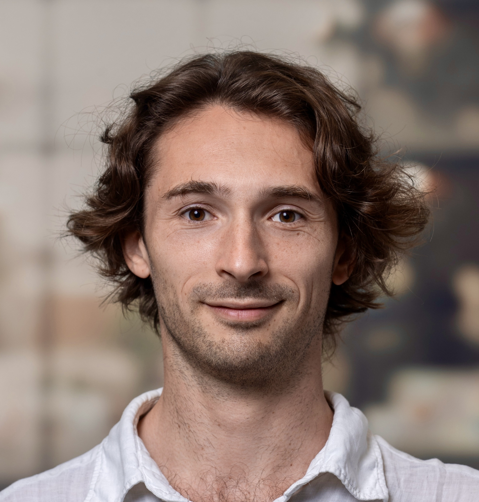
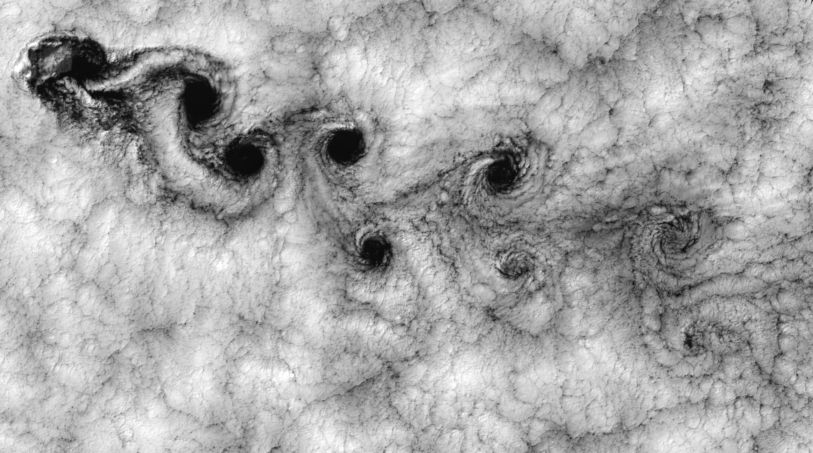

LiDAR Wind Field Reconstruction (GloBE)
Developed machine learning algorithms using Gaussian Processes to optimize LiDAR scanning patterns and reconstruct 3D wind fields for characteristic atmospheric events.

Wind energy, fluid mechanics, and computational physics
With an international background in mechanical engineering and a passion for understanding nature, I enjoy taking on challenges, using computational modeling to turn complex flow data into actionable insights. My work brings together scientific research, consulting, and project management, with a commitment to sustainability and ethical impact.

Research and engineering projects across wind energy, remote sensing, and computational fluid dynamics.
Developed machine learning algorithms using Gaussian Processes to optimize LiDAR scanning patterns and reconstruct 3D wind fields for characteristic atmospheric events.
Wind farm flow control optimization for improved yield in offshore wind farms. Developed a flow estimation model using SCADA data from turbines.
Developed tools for outlier and trend detection using Isolation Forest and clustering algorithms for sensor data processing.
Designed the measurement setup and data analysis procedure to estimate the particle velocity density function of deep-sea sediment samples from turbidity measurements.
Peer-reviewed papers, conference presentations, and technical reports.
Journal of Physics: Conference Series · 2025
EERA DeepWind · 2023
EPFL · 2025
TNO · 2021
Python · MATLAB · SQL · Git · HPC clusters
PyTorch · TensorFlow · Gaussian processes · Neural Networks (CNN, LSTM, Transformers etc...)
Flow and wake modeling · wind farm control · SCADA, LiDAR and sensor analysis · resource assessment
Optimization algorithms · control theory · energy management · grid integration · cost analysis
Core domains of expertise spanning atmospheric sciences, remote sensing, and machine learning.
I work on understanding flow behavior in and around wind farms, focusing on wake dynamics, turbulence, and mesoscale effects. This links to CFD and mesoscale models such as WRF, to capture the larger patterns that drive flow predictions and turbine behavior.
I develop strategies for LiDAR and ADCP data analysis. These methods aim to capture phenomena such as flow patterns, vertical stratification, blockage, jets, and shear layers at higher resolution, with direct relevance for wind turbine and wind farm operations.
I explore data-driven models across natural flow modeling, forecasting, and system data analysis from SCADA and other sensors. By integrating ML with physical models, I am interested in building hybrid solutions to understand and model the world.
Complete details of my education, experience, and publications.
Download CV (PDF)Last updated: January 2026
I am open to collaborations, research opportunities, and consulting projects. Please reach out via email or connect with me on LinkedIn.